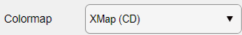

Help file version 21.11.2021 by M. Tedeschi & P. Lanari
Access XMapTools resources online
This part of XMapTools 4 is currently at level 3 of development (1, largely untested; 2, tested for a few cases; 3, tested and benchmarked; 4, publication quality).
Table of content
Color Bar & Color Palette
Other options
XMapTools main window
This help file contains a description of the tools available in the section Options.
Use these options to change the color palette, the resolution of the colormap (number of colors), change the scale of the color bar to logarithmic and add a black or white layers at the bottom or/and at the top of the color palette.
Colormap  Set the color palette to be used for color bar throughout XMapTools.
Recommended color palettes are largely inspired from www.ColorBrewer.org by Cynthia A. Brewer, Geography, Pennsylvania State University. The following abbreviations are employed in the dropdown menu: Colorblind friendly (C), Linear (L), Divergent (D) and Printing friendly (P).
The following scientific colour maps from Fabio Crameri (https://www.fabiocrameri.ch/colourmaps/) are also available:
Select the box Log (Use a log colormap)  to set a logarithmic axis for the color bar. If this option is not selected a linear scale is applied instead.
to set a logarithmic axis for the color bar. If this option is not selected a linear scale is applied instead.
Field Colormap resolution  sets the number of colors used in the colormap (i.e., the resolution of the color bar). The colors palettes defined with more colocrs are resampled. The default value is 256.
sets the number of colors used in the colormap (i.e., the resolution of the color bar). The colors palettes defined with more colocrs are resampled. The default value is 256.
Layer options for Lower and Upper  adds a black or white layer at the bottom (lower) or/and at the top (upper) of the color palette. If selected, the layer can be set either to black or white in the corresponding dropdown menu.
adds a black or white layer at the bottom (lower) or/and at the top (upper) of the color palette. If selected, the layer can be set either to black or white in the corresponding dropdown menu.
Option Display negative values  , if selected negatives values are displayed in the plotted map. By default, XMapTools ignores negative values in plots.
, if selected negatives values are displayed in the plotted map. By default, XMapTools ignores negative values in plots.
Option Med-filter 3D surface  defines the value of the median filter to be applied when a new 3D surface is plotted (see in the main menu Edit > Plot 3D surface). Changing the option does not update the plots already generated.
defines the value of the median filter to be applied when a new 3D surface is plotted (see in the main menu Edit > Plot 3D surface). Changing the option does not update the plots already generated.
The current resolution of the program is displayed here. Please send this value if you experience display issues with XMapTools.